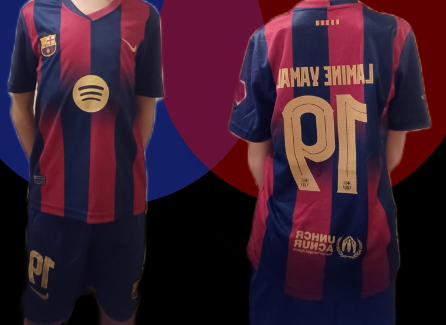
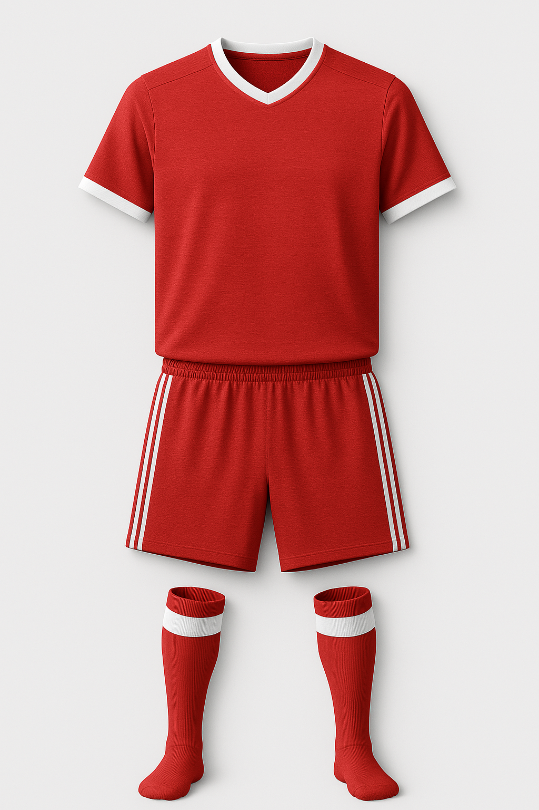

Equipación del Chorras F.C. compuesta de camiseta azulgrana más pantalón azul. Este equipo estrena esta equipación este año. La equipación es oficial y de gran calidad.

Equipación de Los Peligrosos compuesta de camiseta amarilla y pantalón, esta equipación lleva ya 5 temporadas con este equipo,el cual parece no querer desprenderse de ella.

Equipación de Papordos United compuesta de camiseta blana y pantalón azul. Esta equipación fue cedida por Jorge para este equipo. Tejido algodón 100% con gran capacidad de transpiración.